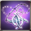
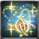
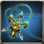
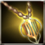
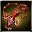
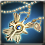
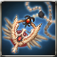

AR
117648
** [Inventory] - Protect your precious Item with [Protect Item].
Attributes
Rating: 37
DR (in-built):1
Max.MP: 15
Healing +700
DR (in-built):1
Max.MP: 15
Healing +700

117648
** [Inventory] - Protect your precious Item with [Protect Item].
Available to equip above Lv. 1 - Scout
Rosario that is decided the A.R. and ATK Power according to the players level.
Max 6 enhancement possible.

Available to equip above Lv. 1 - Scout
Trial Rosario made as a tester to develop the powerful weapon. Cant be used continuously, as its durability wasnt considered while making.[ATK to All types+120%, Attack SPD+20%]
Available to equip above Lv. 1 - Scout
Trial Rosario made as a tester to develop a better quality weapon. It can not be used continuously since its durability was not considered while making.[HP Recovery +700, Max SP +15%]
Available to equip above Lv. 84 - Scout
A rosario crafted for pioneers convenient usage. Feels a mysterious power from it. [INT -10]
Lv.100 - Scout / Expert and above
The Rosario that was used as an accessory by the upper class in the past. It can inflict Enchant option [Revival]. [Immunity +3]
 Magic Weapon Crystal - Lv 35 x2 Magic Weapon Crystal - Lv 35 x2 |
 Star Stone x50 Star Stone x50 |
 kryptonite x200 kryptonite x200 |
 Enchantchip Veteran x100 Enchantchip Veteran x100 |
 Elemental Jewel x10 Elemental Jewel x10 |
 Fool Stone x1 Fool Stone x1 |

Lv.100 - Scout / Master exclusive
A Rosario made from the power in Body of Arbremon. It was made by Montoro with the knowledge he obtained from the Ancient Civilization. It can inflict [Resurrection]. [D.R.+1, Abnormal State RES +15, HP recover+1500, Immunity+5]
Only Veteran + can equip - Scout
Rosary used for praying amplifies effects of Healing type skills.
Only Veteran + can equip - Scout
A Damaged Rosario wielded in ancient times. You can feel a mysterious power radiating from it. [INT -10] [HP Recovery +300]
Only Veteran + can equip - Scout
An artifact used in ancient times. You can feel a strange power radiating from it. [HP Recovery +300] [Maximum SP +50]
| Impair Ancient Rosario x1 |
 Shiny Crystal x300 Shiny Crystal x300 |
| Enchantchip Veteran x1 |
| Fool Stone x1 |
| Fool Stone x1 |
Only Veteran + can equip - Scout
Rosary used for counting prayers. It increases Healing skill. [SP +500]
 Powdered jewel x10 Powdered jewel x10 |
 Pure Otite x5 Pure Otite x5 |
| Magic Weapon Crystal - Lv 28 x2 |
| Enchantchip Lv 92 x3 |
| Fool Stone x1 |
| Fool Stone x1 |
Only Veteran + can equip - Scout
Rosary used for counting prayers. It increases Healing skill. [SP +500]
Only Veteran + can equip - Scout
Rosary used for counting prayers. It increases Healing skill. [HP +1000]

Available to equip above Expert Level - Scout
Rosary used for counting prayers. It increases Healing skill. [HP +1500]
 Symbol of Naraka x100 Symbol of Naraka x100 |
| Magic Weapon Crystal - Lv 35 x2 |
 a lump of Gold x1000 a lump of Gold x1000 |
 Solvent x1000 Solvent x1000 |
| Shiny Crystal x2000 |
| Fool Stone x1 |
Available to equip above Expert Level - Scout
Rosary used for counting prayers. It increases Healing skill. [HP +1500]
Available to equip above Expert Level - Scout
Rosario that belongs to a prospering family in the past. At that time, giving weapons to the nation was one way to be approved of the familys legitimacy officially. [HP Recovery +1000, Immunity +3]
| Enchantchip Veteran x100 |
| Magic Weapon Crystal - Lv 33 x1 |
| Shiny Crystal x200 |
| Fool Stone x1 |
| Fool Stone x1 |

Available to equip above Master - Scout
A Rosario made from the power in Body of Arbremon. It was made by Montoro with the knowledge he obtained from the Ancient Civilization. It can inflict [Resurrection]. [Abnormal State RES +10, HP Recovery +1050]
| Symbol of Naraka x100 |
| Magic Weapon Crystal - Lv 35 x1 |
 Arbremons Skin x50 Arbremons Skin x50 |
 Devils Dream x100 Devils Dream x100 |
 liquid of Heaven x3 liquid of Heaven x3 |
| Fool Stone x1 |

Available to equip above High Master - Scout
A Rosario made from the power in Body of Arbremon. It was made by Montoro with the knowledge he obtained from the Ancient Civilization. It can inflict [Resurrection]. [D.R.+1, Abnormal State RES +15, HP recover+1500, Immunity+5]
Available to equip above High Master - Scout
It was restored through the legendary Blacksmith Ignacio Valerons Weapon Manufacture Book. Though its performance is less than half of the original, it displays unequaled ability. [Valerons Protection] can be added by Violet Valeron. [Abnormal State RES RES +10, HP Regeneration +1050]
| Magic Weapon Crystal - Lv 37 x1 |
 Silver Insignia of Patrikyon x100 Silver Insignia of Patrikyon x100 |
| Golden Insignia of Magic Corps x100 |
 Symbol of Illicia x50 Symbol of Illicia x50 |
 Warped weapon debris x500 Warped weapon debris x500 |
 Shiny Sollarion x300 Shiny Sollarion x300 |
| liquid of Heaven x5 |
Available to equip above High Master - Scout
Rosario containing Mind Master Stellas power
[IMM+5, HP Recovery+1050]
| Magic Weapon Crystal - Lv 38 x1 |
| Armonium Ore - Red x500 |
| Armonium Ore - Red x500 |
 TimePiece : Rose x500 TimePiece : Rose x500 |
| TimePiece : Rose x900 |
 Vertrauen Symbol x1 Vertrauen Symbol x1 |
 Star Essence x50 Star Essence x50 |
Available to equip above High Master - Scout
Rosario containing Mind Master Stellas power
[IMM+5, HP Recovery+1050]
Available to equip above High Master - Scout
The weapon made to fight against Abyss Army by processing Earth-color Armonium containing Abyss Essence. It can retain the shape as a weapon thanks to the holy power, but its shape looks ominous owing to Abyss Essences power.{br}[Extra damage to Demon type enemy+25%]{br}[AStat RES+10, HP Regen+1050]
| Magic Weapon Crystal - Lv 38 x1 |
| liquid of Heaven x10 |
 Armonium Ore - Black x10000 Armonium Ore - Black x10000 |
| Fool Stone x1 |
| Fool Stone x1 |
Available to equip above High Master - Scout
The weapon made to fight against Abyss Army by processing Earth-color Armonium containing Abyss Essence. It can retain the shape as a weapon thanks to the holy power, but its shape looks ominous owing to Abyss Essences power.{br}[Extra damage to Demon type enemy+25%]{br}[AStat RES+10, HP Regen+1050]
Available to equip above High Master - Scout
Not holding
Available to equip above High Master - Scout
Not holding
Available to equip above Master - Scout
A Rosario made from the power in Body of Arbremon. It was made by Montoro with the knowledge he obtained from the Ancient Civilization. It can inflict [Resurrection]. [Abnormal State RES +10, HP Recovery +1050]
| Symbol of Naraka x100 |
| Magic Weapon Crystal - Lv 35 x1 |
| Arbremons Skin x50 |
| Devils Dream x100 |
| liquid of Heaven x3 |
| Fool Stone x1 |
Available to equip above High Master - Scout
It was restored through the legendary Blacksmith Ignacio Valerons Weapon Manufacture Book. Though its performance is less than half of the original, it displays unequaled ability. [Valerons Protection] can be added by Violet Valeron. [Abnormal State RES RES +10, HP Regeneration +1050]
Available to equip above High Master - Scout
Old weapon Violet Valeron restored in the past. Its performance is lower than the original version.{br}[ATK to all types+100%]

Available to equip above High Master - Scout
209388